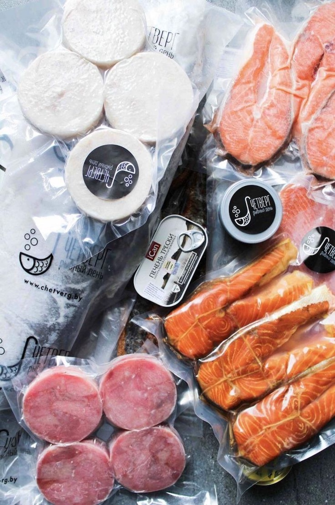
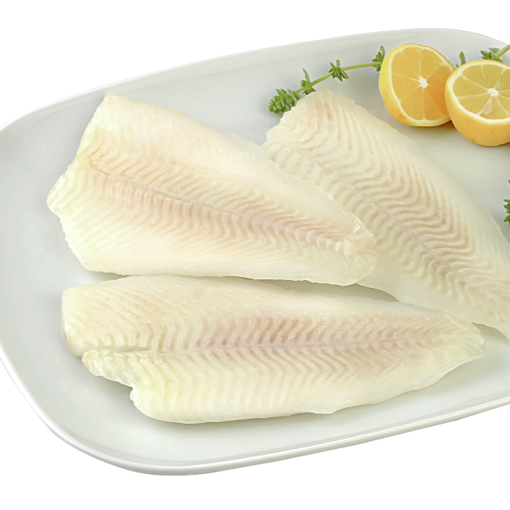
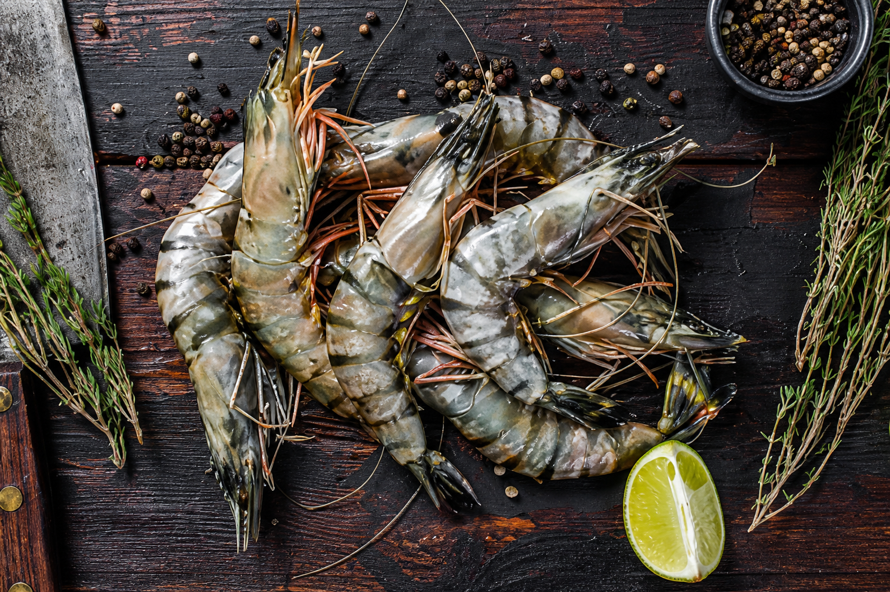
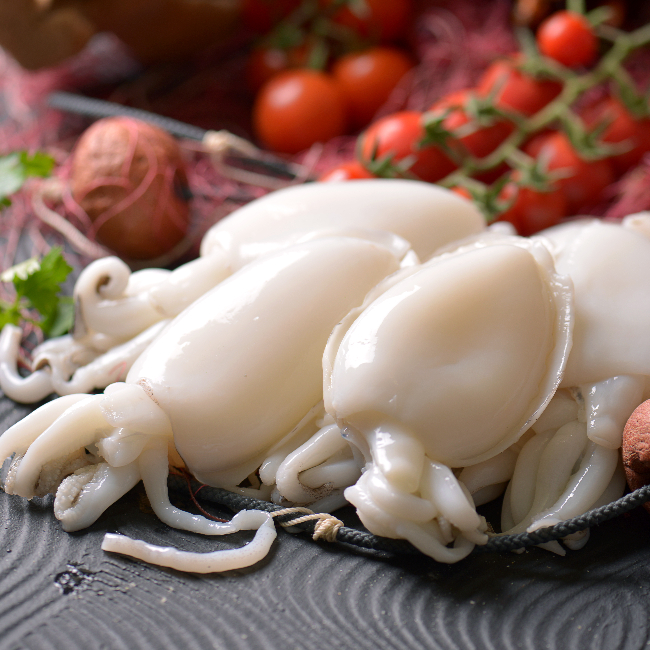
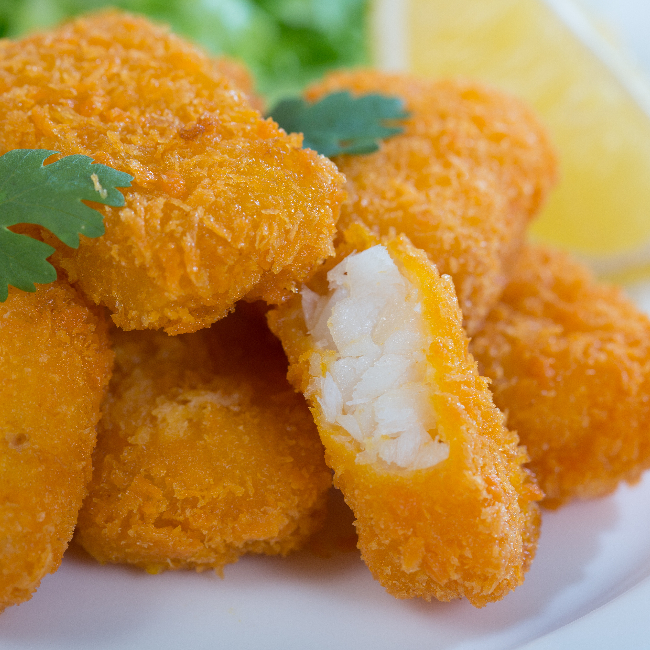
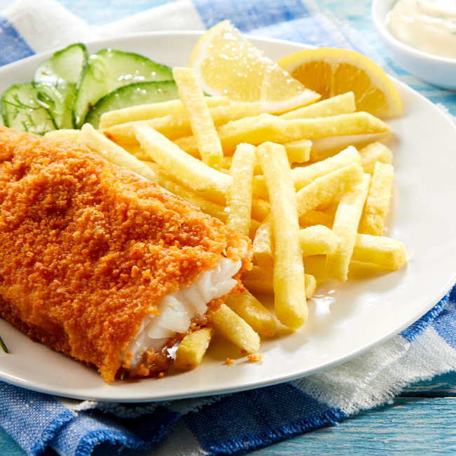
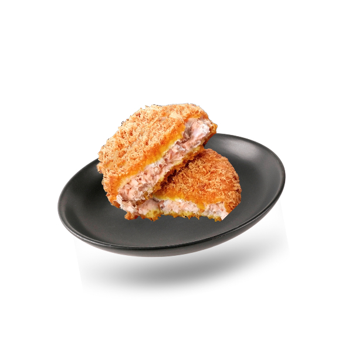
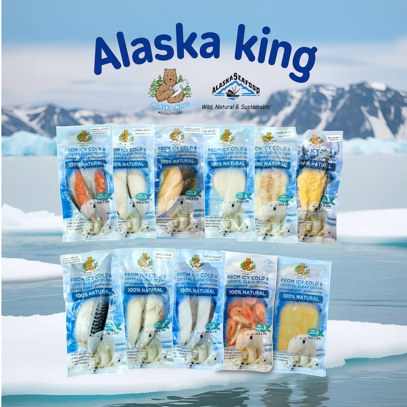
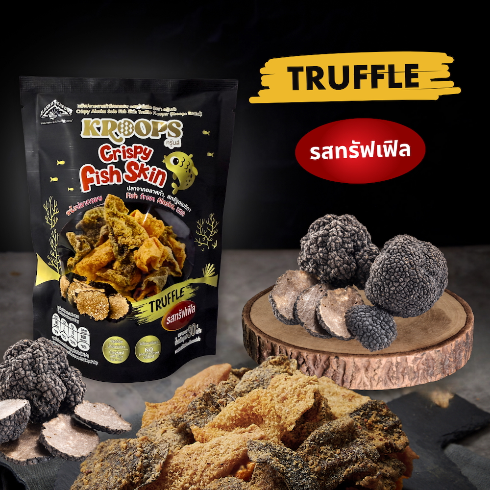

ผลิตภัณฑ์
ผลิตภัณฑ์

วัตถุดิบชั้นเยี่ยมผ่านกระบวนการแช่แข็งมาตรฐานสากล รักษาความสดและคุณค่าทางโภชนาการได้ดีที่สุด

Atlantic Salmon คุณภาพพรีเมียม นำเข้าจากนอร์เวย์และชิลี รับรอง ASC

Wild Pacific Salmon จับจากธรรมชาติ อลาสก้าและรัสเซีย รับรอง MSC

White Seabass (Lates calcarifer) คัดสรรจากแหล่งน้ำไทยและฟาร์มมาตรฐาน ASC

Grouper เนื้อแน่น รสชาติหวานตามธรรมชาติ คัดสรรจากฟาร์มมาตรฐาน ASC

Alaska Black Cod (Sablefish) จากแหล่งน้ำเย็นอลาสก้า สหรัฐอเมริกา รับรอง MSC

Greenland Halibut นำเข้าจากกรีนแลนด์และนอร์เวย์ เนื้อนุ่มหอม รับรอง MSC

Alaska Pollock จากอลาสก้า สหรัฐอเมริกา วัตถุดิบชั้นเลิศสำหรับเมนูหลากหลาย

Yellow Fin Sole จากอลาสก้า เนื้อขาวนุ่ม รสอ่อน เหมาะสำหรับทุกเมนู รับรอง MSC

Atlantic Mackerel นำเข้าจากไอซ์แลนด์และนอร์เวย์ อุดมด้วย Omega-3

Vannamei Shrimp คุณภาพเกรดส่งออก สด กรอบ เด้ง มีหลายรูปแบบการแปรรูป

Black Tiger Shrimp ตัวใหญ่ เนื้อแน่น รสชาติเข้มข้น เป็นที่นิยมในตลาดยุโรปและญี่ปุ่น

Freshwater Shrimp คัดสรรจากแหล่งน้ำจืดที่สะอาด เนื้อหวานอ่อน เหมาะสำหรับทุกเมนู

Squid (Loligo / Illex) ทำความสะอาดเรียบร้อย พร้อมปรุง มีทั้งแบบทั้งตัวและหั่น

Cuttlefish เนื้อนุ่ม รสชาติหวาน ทำความสะอาดพร้อมปรุง เหมาะสำหรับเมนูหลากหลาย

Baby Octopus คัดขนาดพอดีคำ เหมาะสำหรับเมนูย่าง ต้ม ผัด และสไตล์เกาหลี

Breaded Squid Ring วงใหญ่ แป้งกรอบนาน เหมาะสำหรับงานปาร์ตี้และร้านอาหาร

Breaded Shrimp กุ้งตัวโตเต็มคำ พร้อมทอดทันที แป้งบางกรอบ

Fish Finger & Fish Nugget สำหรับเด็กและผู้ใหญ่ แป้งกรอบ เนื้อปลาแท้

Dusted Fish เคลือบแป้งบางพิเศษ กรอบภายนอก นุ่มชุ่มฉ่ำภายใน

Pre-Fried Fish & Chips อุ่นง่ายในหม้อทอดไร้น้ำมัน หรือไมโครเวฟ พร้อมเสิร์ฟ

Pre-Fried Cod เนื้อปลาค็อดแท้ ทอดสำเร็จรูป อุ่นเพียง 5 นาที พร้อมเสิร์ฟ

Crispy Fish Skin สแน็กเพื่อสุขภาพ ไขมันต่ำ โปรตีนสูง กรอบอร่อยทุกคำ

Kroops Fish Skin Truffle Flavor สแน็กพรีเมียม รสทรัฟเฟิลเข้มข้น จำหน่ายใน 7-Eleven
ทีม Sales ของเราพร้อมส่ง Quotation และ Specification Sheet ให้ท่านทันที